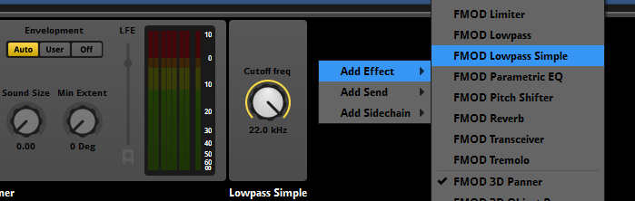
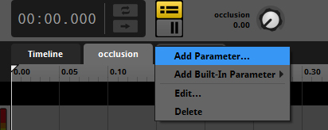

Overview
This tutorial explains how to make use of Occlusion setting in FMOD Studio. There are two ways of setting up occlusion to work with CRYENGINE:
Setting up Occlusion using a Lowpass Effect
The first and simple way is to add a FMOD Lowpass Simple or FMOD Lowpass effect to the Master Track. Make sure to set the Cutoff frequency to the maximum of 22 kHz.

Setting up Occlusion using a Parameter
Another way is to use a Parameter, even though it takes more time to set up but allows more control over how the sound changes when it gets occluded.
To add a parameter:
- Add an occlusion parameter with a range from 0 to 1. You can leave the initial value at 0, which is set when the sound is not occluded.
- In the Occlusion Parameter tab, add automation for volume, lowpass filter or any other effect that should change the sound when it gets occluded.
- Create an occlusion audio system RTPC in the Audio Controls Editor and assign the occlusion parameter of the FMOD Studio event to it.

Testing Different Occlusion Settings
In FMOD Studio, you can test different Occlusion settings while connected to the Editor and without having to rebuild your Soundbanks. You need to save the project after making changes and reconnect to the CRYENGINE.